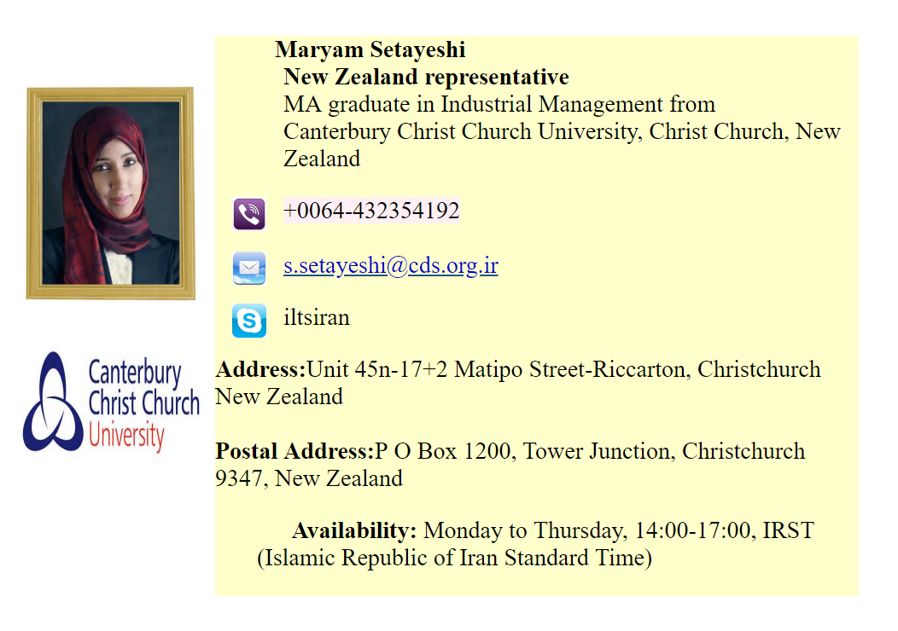

We Build Careers
قبل از آنکه به معرفی دانشگاههای نیوزلند بپردازیم باید بگوییم که نیوزلند همان زلاندنوست. شرايط تحصيل در نیوزلند بسيار شبيه به شرايط تحصيل در استرالياست. به اين ترتيب افرادي كه شرايط تحصيل در نيوزلند را داشته باشند، ميتوانند به استراليا نيز سفري كرده و پس از بررسي شرايط در يكي از اين 2 كشور ادامه تحصيل دهند. مدارس، كالجها و دانشگاههاي نیوزلند معتبر و مشهور بوده و تحصيل در مراكز تحصيلي نيوزلند بيثمر نخواهد بود؛ دانشآموختگان اين مراكز، در سراسر دنيا به راحتي ميتوانند براي ادامه تحصيل يا كار اقدام كنند. كليه آموزگاران در تمام مقاطع تحصيلي و اساتيد مراكز تحصيلي نيوزلند تحصيلات دانشگاهي داشته و بدون اخذ مدرك دانشگاهي اجازه تدريس ندارند.
تنوع تحصيلي در نيوزلند
تنوع رشتههاي تحصيلي ارائه شده در مراكز آموزشي نيوزلند، هر دانشجويي را راضي ميكند. به عبارتي هر شخصی براساس علاقه و تواناييهايش ميتواند رشتهاي را انتخاب كرده و به تحصيل بپردازد. اما چه رشتههايي در مراكز آموزشي نيوزلند وجود دارد؟ معماري، عمران، كشاورزي، علوم دريايي، هوا- فضا، پزشكي، دندانپزشكي، علوم آزمايشگاهي، پرستاري، بازرگاني، بازاريابي، هتلداري، كتابداري، حقوق، علوم گردشگري (توريسم)، حمل و نقل، ارتباطات، زبان و زبانشناسي، مردمشناسي، هنرهاي تجسمي، طراحي لباس، صنايع دستي، موسيقي، كودكياري، كترنيگ (سرپرستي تهيه و ارائه غذا)، اقتصاد، منشيگري و دفترداري، علوم سياسي از جمله رشتههاي ارائه شده در مراكز تحصيلي نیوزیلند است.
مدت تحصيل در مراكز آموزشي نيوزيلند
اگرچه يك برنامه كلي براي تحصيل در نيوزلند وجود دارد، اما گاهي برنامهها و مدت تحصيل در بعضي مراكز با مراكز ديگر متفاوت است. اما اصول كلي و شرايط و مراحل تحصيل به اين صورت است.
پس از طي دوره دبستان و راهنمايي، دانشآموزان با انتخاب يكي از راههاي زير ميتوانند مهارت کسب کرده و مدرك تحصيلي معتبر دريافت كنند.
با 6 تا 18 ماه تحصيل در مراكز فني- حرفهاي، مدرك فني- حرفهاي در رشتهاي انتخابی دريافت كرده و ميتوان وارد بازار كار شد.
مدت زمان لازم براي اخذ مدرك ديپلم یک سال و نیم تا 3 سال است. با اخذ مدرك ديپلم در يك رشته خاص ميتوان وارد عرصه كار شد.
برای اخذ مدرك كارشناسي (ليسانس) پس از ورود به دانشگاه 3 تا 5 سال زمان لازم است. اما قبل از اخذ مدرك نهايي، ابتدا يك دوره ۶ ماهه مهارتي و سپس يك دوره یک ساله عملي لازم است تا مدرك كارشناسي دانشجو اعطا شود.
مقعطع كارشناسيارشد، مقطعي است كه به مطالعه، تحقيق و بررسي نیاز دارد. مدت یک تا 2 سال، تحقيق و بررسي لازم است تا مدرك كارشناسي ارشد و چهار تا پنج سال تحقيق لازم است تا مدرك دكترا به دانشجو اعطا شود. گاهي پس از اخذ مدرك دكترا، دانشجويان علاقهمند به تكميل معلومات ميتوانند بين شش تا 12 ماه به كشوري كه در زمينه مدرك تحصيليشان برجسته است سفر كرده و پس از تكميل مطالعات به كشورشان بازگردند.
يك سال تحصيلي
یک سال تحصیلی در نیوزیلند از اواخر فوريه (بهمن) آغاز و در نوامبر (آبان) پايان مييابد. زمان ثبتنام اكثر دانشگاهها در جولاي (تير) است. براي تكميل زبان انگليسي براي ورود به دانشگاه در همه ماههاي سال به دانشجويان خدمات ارائه ميشود.
زبان انگليسي چه نقشي در تحصيل دارد؟
اگرچه تسلط به زبان انگليسي (نوشتن، خواندن، مكالمه) براي ورود به دانشگاه الزامي است، اما ميزان تسلط براي هر دانشگاه يا موسسه آموزش عالي متفاوت است. مدرك تافل و آيلتس 2 مدرك معتبر براي ارائه به مراكز آموزشي است و با داشتن يكي از اين مدارك مشكلي نخواهيد داشت. اما حدنصاب نمره شما نيز مهم است. به چه صورت؟
براي تحصيل در مقاطع ابتدايي دبيرستان، مقاطع پاياني دبيرستان و كسب مدرك فني حرفهاي و مدرك ديپلم، نمره تافل بين 500 تا 550 و آيلتس بين پنج و شش قابل قبول است.
براي ادامه تحصيل در مقطع كارشناسي، كارشناسيارشد و دكترا نمره تافل بين 550 تا 600 و آيلتس بين شش تا هفت مورد قبول است.
در صورت عدم تسلط كامل و كسب حدنصاب قبولي، امكان تكميل زبان انگليسي در نيوزلند وجود داشته و پس از تكميل زبان، ميتوان مجددا در امتحان شركت كرد.
قبل از آغاز تحصيل در هر مقطعي ابتدا لازم است مدارك تحصيلي شما با مراحل تحصيل در نيوزلند مطابقت يافته و سپس در هر مقطعي كه قبول شديد ادامه تحصيل بدهيد.
براي اخذ مدرك، چه زحماتي را بايد در دانشگاه متقبل شد
دانشجويان دانشگاههاي نيوزلند در طول تحصيل موظف به ارائه مقاله و برگزاري سمينار بوده و بخش اعظم نمرات درسي آنها از اين طريق محاسبه ميشود. اساتيد در طول هر ترم مسائل علمي مختلفي را مطرح ميكنند و دانشجويان تا پايان ترم موظف به ارائه پاسخ به اين سوالهایند. پاسخ به اين پرسشها نيازمند تحقيق، بررسي و آزمايش داشته و نمره قبولي هر درس بسته به ارائه پاسخ صحيح به اين سوالها دارد. مباحثههاي كلاسي نيز بسيار مهم است و دانشجويان بايد نظريههاي خود را كتبا ارائه كنند. بنابراين حضور فعال در كلاس، باعث افزايش تواناييهاي دانشجويان شده. تحقيق و پژوهش بخشي جداييناپذير از مراحل تحصيل دانشجويان است.
در بعضي دانشگاهها امتحان پايان ترم وجود ندارد و تحقيقها و فعاليتهاي دانشجويان در طول ترم نمره پايان ترم آنهاست. در بعضي مراكز نيز امتحان پايان ترم وجود دارد كه به صورت كتبي يا شفاهي است. در مقطع كارشناسي ارشد و دكترا، ارائه پاياننامه الزامي است.
تسهيلاتي به دانشجويان نيوزلند
حدود ۶۵ هزار نفر از ۶۰۰ هزار دانشجوي مشغول به تحصيل در نيوزلند و استراليا خارجياند. بنابراين واضح است كه تسهيلات ارائه شده به دانشجويان مطلوب است: دسترسي آسان به اطلاعات مورد نياز دانشجويان از هر نظر، دسترسي آسان به مراكز درماني و پرداخت كمك هزينه درماني در صورت نياز، حمايت مالي براي تحصيل، مشاوره تحصيلي، مشاورههاي روانشناسي براي دانشجويان مبتلا به افسردگي به علت دوري از وطنشان، ارائه سريع ويزا و خدمات به دانشجويان براي سفر به كشورشان يا كشورهاي ديگر، كمك به دانشجويان براي يافتن كار مناسب در مدت تحصيل و پس از فارغالتحصيلي، ارائه هرگونه راهنمايي در هر زمينه.
تحصيلات پيشدانشگاهي
تحصيلات ابتدايي در اين كشور از 6 سالگي آغاز ميشود و 8 سال طول ميكشد. با اتمام تحصيلات دوره ابتدايي، تحصيل در دبيرستان كه شامل يك دوره 5 ساله استآغاز ميشود. البته دروس دانشآموزان در سال يازدهمتبديل به دروس اختصاصي ميشود. در پايان سالهاي يازدهم، دوازدهم و سيزدهم سه نوع مدرك دبيرستاني صادر ميشود كه هر كدام به ترتيب براي ورود به يك دسته از مراكز آموزش عالي مانند كالجها، پليتكنيكها و دانشگاهها معتبر است.
البته در نیوزلند نظام نوين آموزشي NQF معرفي و جايگزين نظام قبلي شده است. در اين مجموعه دانشآموز از سال يازدهم به بعد نظام جدیدی را طي ميكند كه در آن هر كس حق انتخاب دروس دلخواه خود را دارد و با موفقيت در امتحانات در نظام جديد آموزشي فقط يك نوع ديپلم دبيرستان دريافت ميكند.
نظام آموزشي NQF تمام دوره پيش دانشگاهي، دانشگاهي و تحصيلات تكميلي را تحت پوشش قرار ميدهد و از اين رو كليه تحصيلات به نظام واحدي تبديل شده است.
دورههاي تحصيلي
New Zealand Certificate: پس از 5 سال تحصیل نیمهوقت، با شرط داشتن دیپلم دبیرستان طی میشود.
New Zealand Diploma: شامل يك سال پژوهش و كار بعد از دوره New Zealand Certificate است.
Bachelor: شامل سه تا شش سال تحصيل بعد از ديپلم دبيرستان است. طول تحصيل در اين دوره به رشته بستگي دارد. اكثر رشتههاي علوم پايه، مهندسي، كشاورزي و علوم انساني سه تا چهار سال، رشتههاي معماري، دندانپزشكي و دامپزشكي پنج سال و رشتههاي پزشكي شش سال طول ميکشد. مدارك دوره Bachelor را ميتوان به صورت Honours گرفت. براي دورههاي سه ساله Bachelor بعد از يك سال تحصيل (كه در مجموع چهار سال ميشود) مدرك Honours صادر ميشود و دورههاي چهار ساله Bachelor به چهار دسته First (1 and 2)، Second،Third تقسیم ميشود. بديهي است كه مدرك Honours - First بالاترين و Third پايينترين سطح را دارد.
اخذ مدرك PGD نيز بعد از گذراندن دورههاي New Zealand Diploma يا Bachelor در دانشگاههاي اين كشور ميسر ميشود. با دروس اين دوره معمولا يك دوره پژوهش نيز همراه است كه يك تا سه سال طول ميکشد و مدت آن به برنامه آموزشي و رشته بستگي دارد.
Master: برای ورود به اين دوره، امتحاني صورت نميگيرد، بلكه با توجه به نمرات دوره Bachelor و معرفهاي ارائه شده پذيرش صادر ميشود. طول مدت اين دوره به نوع مدرك Bachelor بستگي دارد، بدين صورت كه 2 سال تحصيل بعد از دوره سه ساله Bachelor و يك سال تحصيل بعد از دوره چهار ساله Bachelor لازم است. دورههاي Master با درس و پژوهش همراه است.
Ph.D: این دوره فقط پژوهشي است و مدتش حداقل 3 سال و حداكثر 6 سال است كه در پايان دانشجو بايد از پاياننامه خود شفاهی دفاع كند. البته در برخي موارد از دانشجويان امتحان كتبي نيز گرفته ميشود.
در نظام آموزشي نیوزلند، همانند انگلستان گرفتن مدرك Ph.D به طور مستقيم، پس از Bachelor نيز امكانپذير است كه در اين صورت دانشجو بايستي وضعيت علمي كاملا مطلوبي داشته باشد.
نحوه ارزشيابي مدارك تحصيلي
مدارك New Zealands Diploma, New Zealand Certificate و كليه مدارك 2 يا سه سال تحصيل كه منجر به اخذ مدرك Bachelorنميشود، بعد از ديپلم دبيرستان، كارداني ارزشيابي ميشود.
مدارك ذكر شده در بند يك به همراه PGD در مجموع كارشناسي ارزشيابي ميشود.
مدارک Bachelor بعد از ديپلم دبيرستان از دانشگاههاي گروه 1 و 2، كارشناسي ارزشيابي ميشود.
براي مدارك PGD، بعد از كارشناسي، فقط صحت صدور صادر ميشود.
مدارك Master از دانشگاههاي گروه 1 با شرط داشتن مدرك كارشناسي، كارشناسي ارشد ارزشيابي ميشود.
مدارك Ph.D از دانشگاههاي گروه 1 با شرط داشتن مدرك كارشناسيارشد، دكترا ارزشيابي ميشود.

نشانی:ساری- میدان امام-ساختمان برلیان-طبقه اول-بالای بانک تجارت،واحد شماره 19
لطفا قبل از آمدن به موسسه با کارشناسان موسسه تماس بگیرید
موسسه اعزام دانشجو کندو دکتر عزیزی
با مجوز وزارت علوم
شماره های تماس جهت تعیین وقت
011333675000
09030612326
(زمان حضور آقای دکتر عزیزی: عصر های یک شنبه،سه شنبه و پنج شنبه از ساعت 16 الی 20)
Address:
Kühlwetterstraße 8.
Room Number 0227
52072 Aachen
Germany
Contact:01573 8947230-02418025258
Business Hours:
Mon 7:00PM - 9:30AM
Wed 7:00-9:30PM
Sat 10:00AM-6:30PM
Sun 10:00 AM - 6:30 PM


کلیه حقوق مرتبط به این وبسایت متعلّق به موسسه اعزام دانشجو کندو دانش آوران سام میباشد
cds.org.ir, Copyright©2015, All Rights Reserved
Design by : BOOMHUNK